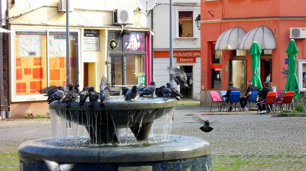
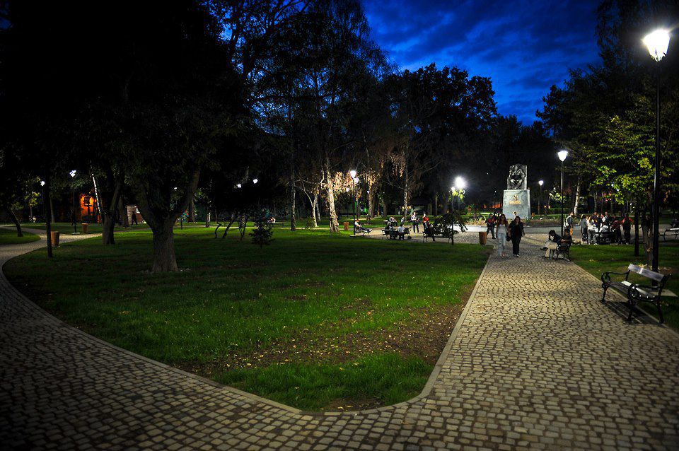
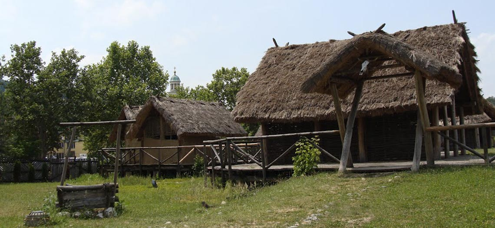
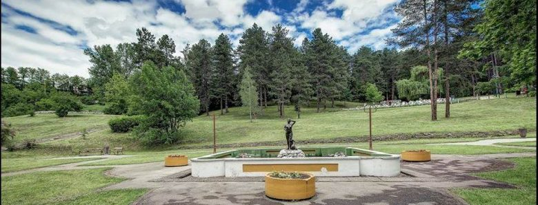

Trg Slobode
Svoju i bogatu turističku ponudu Tuzla je upotpunila Trg slobode. Radi se o desetom trgu na području Grada Tuzla. Trg Slobode je najveći trg u Bosni i Hercegovini, na čijem se prostoru nalazi rekonstruisana zgrada Baroka iz austrougarskog perioda. Na Trgu je otkriveno arheološko nalazište sa vrlo značajnim ostacima arheološkog materijala. Prostor je uređen za druženje i različite manifestacije, a krasi ga središnja fontana sa pratećim sadržajem.
Centralno mjesto na Trgu zauzima velika fontana čije spoljašnje zidove krase ornamenti stećaka, no to na Trgu slobode nisu jedini simboli srednjovjekovne Bosne.Naime, na dijelu na kojem su najmenski zadržane zelene površine, a gdje je donedavno bila stara fontana, postavljena je skulptura koja simbolizira stećak, a na mermernim pločama kojima je obložena lokacija uklesani su i epitafi sa srednjovjekovnih nadgrobnih spomenika. Epitafi i ornamentika stećaka nadopunjuju već postojeće simbole na Trgu iz svih razdoblja kroz historiju kao što su Čaršijska džamija i česma iz doba osmanske vladavine, zgrada baroka koja simbolizira period austrougarske uprave te nekoliko objekata iz savremenog doba ili bliže prošlosti.
Soni Trg
Turistička ponuda grada je obogaćena uređenjem Sonog trga kao muzejsko-turističkog kompleksa na kojem se u vrijeme turske vlasti vršila eksploatacija soli pri čemu su zaštićeni i učenjeni dostupnim za razgledanje ostaci glavnog sonog bunara korištenog u vrijeme turske vladavine.
Centralno mjesto na Sonom trgu je fontana, poklon grada Ravene, izgrađena u obliku stilizirane neolitske posude za iskuhavanje soli, te obrađena mozaikom u realizaciji Instituto d’arte Severini i svjetski priznatog majstora za mozaik Felice Nittola.
Na Sonom trgu,u granit su uklesane riječi:“Tuzla je jedno od najstarijih naselja u Evropi.Sedam hiljada godina od neolita do danas,ljudi proizvode so i žive na ovom prostoru. Gradjani Tuzle obnoviše Soni trg 2004.godine,sa vjerom da je ljubav izvor nastanka i vječitog trajanja svijeta.“
Na Trgu se nalazi i replika neolitske posude za isoljavanje, koja je sastavni dio fontane, ukrašene mozaikom iz Ravenne, svjetske prijestonice mozaične umjetnosti. Na Sonom trgu se može pogledati i muzejska postavka predmeta iz doba neolita i drugih historijskih razdoblja, pronađenih na lokalitetima u i oko Tuzle.
Soni trg je nekada bio središnja tačka (pazarište) oko koje su se dalje gradili brojni vjerski i javni objekti. Ovo mjesto i danas predstavlja centar historijskog dijela grada, oko kojeg se nižu desetine uskih, granitom popločanih uličica, uvijek punih života i mladosti.
Proizvodnja soli i prihodi od nje bili su ključni faktor koji je utemeljio Tuzlu kao kasabu. Do organizovane proizvodnje i prodaje soli dolazi kopanjem sonog bunara na današnjem Sonom trgu 1476. i proglašenjem Tuzle «carskim hasom», 1477. godine. Način proizvodnje soli razabire se iz samih imena kojima su te solane dolaskom osmanlija nazivane: Solane na drvo, (Agac Tuzla, Memleha-i cob) čime je naglašena razlika između ovih i morskih solana.
Na Sonom trgu nalazilo se i do 80 tava u kojima se iskuhavala slana voda sa sonog bunara. Ispočetka su se proizvodile skromne količine soli, a s vremenom se to povećavalo. Razlog tome nije toliko u tehničko-tehnološkom napretku, koliko u porastu stanovništva Tuzle, koje je bilo vezano uz proizvodnju soli. Za tuzlansku so se znalo i izvan Bosanskog ejaleta. U 17. st. francuski kralj Luj XIV je preko svojih trgovaca nabavljao so iz Tuzle za svoj dvor. Dokaz tome je francuski kovani novac sa likom i imenom Luja XIV, pronađen na području Tuzle. So je povezivala različite zemlje, kulture i civilizacije toga vremena. Tuzlanska so je bila jedan od osnovnih artikala kojim se Bosanski ejalet predstavio na Međunarodnoj privrednoj izložbi u Filadelfiji 1876. godine.
Forma kulturnog turizma je uobličena i predstavljena javnosti kroz mogućnost posjeta arheološkim lokacijama u Gornjoj Tuzli (neolit), na Gradovrhu u Solini i Krešića Gradini u Gornjem Par Selu (kasno bronzano doba) kojima su pridodati obilasci velikom broju kulturno-istorijskih spomenika na području Tuzle (evidentiran je 381 spomenik). Sva ova bogata turistička ponuda grada Tuzle i okoline se promovira radom Turističke zajednice Grada Tuzla.
Gradski park
Tuzla je grad sa najvećim parkovskim površinama u Bosni i Hercegovini. Centralni gradski park se nalazi u pješačkoj zoni historijske jezgre Tuzle. Sastoji se od pješačkih staza popločanih granitom, klupa za odmor i opuštanje. Posjetiocima parka na raspolaganju je bežični internet. U Gradskom parku su postavljeni spomenici inspirirani bosanskim srednjim vijekom, a centralno mjesto zauzima statua prvog bosanskog kralja Tvrtka I Kotromanića. Postavljen je i kameni obelisk, na kojem je ispisan tekst Povelje Kulina bana. Mostom je obezbijeđena kvalitetna pješačka veza Centralnog gradskog parka sa kompleksom Panonskih jezera. Pasarela je spona dvije najveće pješačke zone u centru – kompleksa Slana banja i historijske gradske jezgre.
Arheološki park

Tuzla je grad koji svoje ime i svoju prošlost veže za sol, prirodno bogatstvo koje je ostalo ispod Tuzle, nakon povlačenja Panonskog mora u Crno more prije 10 miliona godina, u vidu slane vode i kamene soli. Prošlost i kulturna tradicija grada Tuzle seže daleko u prošlost, sve do neolita – mlađeg kamenog doba, a možda i dalje.
Unutar Kompleksa Panonskih jezera nalazi se Arheološki park- neolitsko sojeničko naselje. Neolitsko sojeničko naselje predstavlja rekonstrukciju načina života kakav je egzistirao na ovom području prije više od 7.000 godine, bazirano na otkrivenim predmetima iz perioda neolita, i čije je vrijeme nastanka potvrđeno od Arheološkog instituta u Beču upotrebom C4 metode. Ovaj, jedinstveni prostor ima višestruko značenje, ne samo za turističku ponudu Tuzle i regiona, nego i u pogledu valorizacije kulturno-historijskog naslijeđa.
Sojenice su kuće na drvenim stubovima, podignute na jezerima, obalama, rijekama ili močvarnim i vodoplovnim terenima. Tuzlansko sojeničko naselje podugnuto je na močvarnom terenu nastalom od izvora vode. Arheološka istraživanja su otkrila da je u centru današnje Tuzle postojalo veliko i bogato neolitsko sojeničko naselje. Unutar sojenica nalazila se jedna ili dvije prostorije na sredini kuće. Na glinenom podu, nalazilo se ognjište, koje je služilo za spremanje hrane, zagrijavanje i osvjeteljenje prostorije. Oko ognjišta se skupljala porodica. Spavalo se na krevetima od greda i dasaka, na koje se prostirala slama i životinjska koža. Tuzla je grad koji svoje ime i svoju prošlost veže za sol, prirodno bogatstvo koje je ostalo ispod Tuzle, nakon povlačenja Panonskog mora u Crno more prije 10 miliona godina, u vidu slane vode i kamene soli. Dio Panonskog mora ponovo je vraćen na površinu Tuzle izgradnjom jedinog slanog jezera u Evropi – Panonskog jezera u strogom centru grada.
Tuzla je grad koji svoje ime i svoju prošlost veže za sol, prirodno bogatstvo koje je ostalo ispod Tuzle, nakon povlačenja Panonskog mora u Crno more prije 10 miliona godina, u vidu slane vode i kamene soli. Dio Panonskog mora ponovo je vraćen na površinu Tuzle izgradnjom jedinog slanog jezera u Evropi – Panonskog jezera u strogom centru grada.
Prošlost i kulturna tradicija grada Tuzle seže daleko u prošlost, sve do neolita – mlađeg kamenog doba, a možda i dalje. Unutar kompleksa Panonskog jezera, u ljeto 2006 godine izgrađen i otvoren je prvi Arheološki park neolitskog sojeničkog naselja u Bosni i Hercegovini i jugoistočnoj Evropi. Arheološki park predstavlja rekonstrukciju dijela neolitskog sojeničkog naselja otkrivenog u Tuzli. Park je muzej na otvorenom smješten je u jugoistočnom dijelu kompleksa Panonskog jezera oslonjen na brežuljkasto uzvišenje uz obalu Panonskog jezera koji ima za cilj da posjetiocima predstavi dio arheološke i historijske prošlosti grada Tuzle, kao i način života, kako materijalnog tako i duhovnog, a posebno prvu proizvodnju soli u neolitskom dobu.
Prilog pretpostavci da je neolitski stanovnik ekspolatisao slane izvore su i pronađeni fragmenti keramičkih posuda grube frakture koje su po mišljenju tadašnjih vrhunskih arheologa služile za isoljavanje slane vode. Rekonstruisane su dvije posude od kojih je jedna datirana u vrijeme 3.500 godina prije nove ere, a druga u 5.000 godina prije nove ere. Dakle, od neolita do danas, ljudi na prostoru sadašnje Tuzle proizvode so.
Arheološki park zamišljen je kao jedinstven objekat, a čini ga:
- podnica polukružno savijena oko brežuljkastog uzvišenja,
- zaravnjeni dio brežuljka uređen kao centralni plato na kojem su postavljeni totem, replika glinene peći, stan za tkanje i sl.,
- 5 nastambi karakterističnih oblika i dimenzija,
- sa centralnom podnicom drvenim mostićima povezane su dvije manje podnice sa još 4 nastambe.
Prvi nalaz predmeta iz neolitskog doba u Tuzli poznat je iz 1903. godine. Tada je, prilikom radova na regulisanju Appel Placa, danas Trga slobode, iskopano nešto arheološkog materijala, što su bile prve indicije o postojanju neolitskog naselja na području Tuzle. Arheološki materijal se sastojao od tri probušena i polirana čekića, jedne keramičke noge rađene od zemlje sa primjesama sitnog pijeska i jedne oveće kugle koja se upotrebljavala kao tucalo za žito. Poslije stručne obrade ovih predmeta Vejsil Ćurčić je došao do zaključka da je na prostoru današnje Tuzle postojalo neolitsko naselje čiji su stanovnici, pored tradicionalnog privređivanja, koristili i izvore slane vode. Svoja istraživanja o neolitskom naselju u Tuzli objavio je u “Glasniku Zemaljskog muzeja Bosne i Hercegovine”, broj XX, iz 1908. godine.
Pored interesantnosti i važnosti, ovaj nalaz ipak nije bio dovoljan da pruži podrobnija obavještenja o vrsti, veličini, bogatstvu i pravoj starosti naselja. Tek 1955. godine otkopano je u Rudarskoj ulici, današnjoj Džafer mahali, dovoljno arheološkog materijala, koji je nedvosmisleno potvrdio da je u Tuzli bilo veliko i bogato neolitsko sojeničko naselje, jedno od najstarijih u Evropi – samo je još u Švicarskoj otkriveno neoilitsko sojeničko naselje.
Pored ostataka sojeničkih nastambi u vidu hrastovih soha i jelovih greda, na ovom lokalitetu je pronađen bogat arheološki materijal kojeg čine fragmenati grube karamike (noge i dna posuda, rubovi, dijelovi trbuha posude i drške), zatim fino glačani fragmenti posuda od crne, sive i crvene keramike raznovrsnih ornamenata, sjekire od glačanog kamena, kremeni nožići i strugalice te izrađevine od kosti (šila, igla, bodež, rogovi jelena).
Na otkopanom dijelu naselja pronađen je veliki broj životinjskih kostiju, ostaci pšenice i ječma, ljuski od lješnjaka, riječnih školjki što dokazuje da su se stanovnici ovog neolitskog naselja bavili lovom, stočarstvom, zemljoradnjom i sakupljačkom privredom.
Nastanak naselja na području današnje Tuzle još u neolitu, može se dovesti u vezu sa postojanjem izvora slane vode. Potvrda ovoj pretpostavci je otkriveno sojeničko naselje – nastanbe na stubovima iznad vode. Naime, neolitskom čovjeku bilo je jednostavnije graditi nastambe na suhom i čvrstom terenu nego praviti sojenice na stubovima na močvarnom tlu. Na težu varijantu gradnje, vjerovatno su uticali jaki ekonomski i strateški razlozi. Jedan od tih razloga su izvori slane vode koji su, zajedno sa rijekom Jalom, doprinijeli da veći dio ovog područja bude močvaran. Podizanjem sojenica, neolitski ljudi su se obezbjeđivali od poplava, a istovremeno kontrolisali i eksploatisali slane izvore.
Prilog pretpostavci da je neolitski stanovnik ekspolatisao slane izvore su i pronađeni fragmenti keramičkih posuda grube frakture koje su po mišljenju tadašnjih vrhunskih arheologa služile za isoljavanje slane vode. Rekonstruisane su dvije posude od kojih je jedna datirana u vrijeme 3.500 godina prije nove ere, a druga u 5.000 godina prije nove ere. Dakle, od neolita do danas, ljudi na prostoru sadašnje Tuzle proizvode so.
Neolitske posude za isoljavanje slane vode su dokaz da je sojeničko naselje u Tuzli bilo prvo poznato neolitsko naselje čiji su stanovnici eksploatisali ovaj dragocjeni mineral. Najstarije evropske kulture koje su koristile so, datirane su u bakarno doba, što znači da neolitski nalaz u Tuzli pomjera granicu poznavanja i upotrebe soli u ljudskoj ishrani iz doba eneolita u neolit.
Svi nalazi pružaju dokaz o visokoj kulturi stanovnika ovog kraja u doba cvjetanja starih kultura u Vinči i Butmiru.
Šetalište Slana Banja
Kompleks Panonskih jezera se neposredno nastavlja na sportsko-rekreacioni kompleks Slana banja, koji je jedan od najprostranijih i najuređenijih centralnih parkova u BiH. Pored staza za šetnju i jogging, ovaj kompleks obuhvata kompleks teniskih terena, igralište za mali nogomet i košarku, te neka od spomen obilježja iz novije historije grada. Na ovom prostoru nalaze se spomen obilježja herojima i žrtvama Drugog svjetskog rata, braniteljima iz rata 1992.-1995., te civilnim žrtvama rata, odnosno tuzlanskoj mladosti koja je stradala na Kapiji 1995. godine. U sastavu Slane banje nalazi se Kuća Plamena mira, namijenjena aktivnostima mladih, njihovim kreativnim inicijativama i idejama, te nekoliko ugostiteljskih objekata. Centralni dio kompleksa krasi fontana sa skulpturom Leda, djelom poznatog tuzlanskog kipara Franje Ledera.
Tuzlanska Kapija
U centru Tuzle na Kapiji od granate ispaljene s položaja Vojske Republike Srpske na Ozrenu 25.maja.1995. godine prekinut je 71 mladi život, a ranjeno 150 osoba. SAMO NEKOLIKO ŽRTAVA BILO JE STARIJE OD 30 GODINA, dok je najmlađa žrtva SANDRO KALESIĆ imao dvije i pol godine.
Poginuli su pokopani u Memorijalnom kompleksu Slana Banja, a na mestu tragedije postavljeno je obilježje sa imenima poginulih i tekstom:
˝Ovdje se ne živi samo da bi se živjelo,
Ovdje se ne živi samo da bi se umrlo,
Ovdje se i umire da bi se živjelo˝
Mak Dizdar